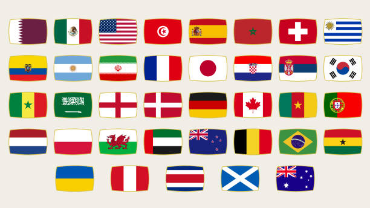

Untuk mengatasi isu isu global di bidang pendidikan ini Indonesia tidak dapat bekerja sendiri melainkan harus bekerja sama dengan negara lain. baik itu bilateral, multilateral maupun regional. Pengertian kerjasama internasional adalah kerja sama yang melibatkan negara-negara yang ada di seluruh dunia maupun sebagian besar negara yang ada di dunia dengan tujuan untuk memberikan keuntungan masing- masing negara. Atau secara singkat kerjasama internasional merupakan hubungan kerja sama antara dua negara atau lebih untuk dapat mencapai tujuan tertentu dengan tetap mengikuti pedoman politik dan ekonomi sama dari negara yang menjalin kerjasama.
Beberapa negara yang mengadakan kerjasama dalam bidang pendidikan dengan Indonesia adalah:
- Kerjasama bilateral antara Indonesia dengan China yaitu:
- Pertukaran pelajar dan guru : memberikan siswa pengalaman belajar yang berharga dan memungkinkan mereka untuk lebih memahami budaya, bahasa, dan sistem pendidikan di negara masing-masing.
- Kursus Bersama / program akademik bersama dapat meningkatkan relevansi materi pembelajaran dengan memasukkan unsur-unsur yang mencerminkan kebutuhan dan perkembangan terkini di kedua negara.
- Penelitian bersama antar institusi pendidikan : menghasilkan penemuan penting dan mendorong inovasi serta penemuan bersama di berbagai bidang.
- Pengembangan kurikulum : dapat menciptakan program pendidikan yang relevan dengan perkembangan global yang dapat menimbulkan mata pelajaran baru, teknologi terkini dan metode pengajaran baru.
- Strategi pengajaran terpadu dapat mencakup pelatihan guru, pertukaran guru dan pengembangan sumber daya pendidikan sehingga mampu meningkatkan kualitas pendidikan, mendukung pengembangan sumber daya manusia yang baik dan membantu tercapainya tujuan Pembangunan Berkelanjutan di kedua negara.
- Pendanaan : untuk proyek-proyek pendidikan dapat membantu mempercepat pembangunan infrastruktur pendidikan dan memberikan dukungan keuangan yang diperlukan.
- Kerjasama multilateral antara Indonesia dengan PBB terutama dengan UNESCO yang berhubungan dengan pendidikan yaitu Peningkatan Akses Pendidikan dimana UNESCO dan perguruan tinggi Indonesia bekerja sama dalam meningkatkan akses pendidikan bagi masyarakat Indonesia, seperti melalui program beasiswa dan bantuan pendidikan untuk masyarakat yang kurang mampu.
- Kerjasama regional antara Indonesia dengan ASEAN yaitu dengan dibentuknya The Southeast Asian Ministers of Education Organization (SEAMEO) guna memajukan bidang pendidikan terutama negara anggota ASEAN yang meliputi bidang:
- Pertukaran PelajarMisalnya pertukaran pelajar selama 4 minggu, ada juga pertukaran pelajar yang berlangsung 1 semester.
- Mengadakan OlimpiadeOlimpiade diselenggarakan secara berkala oleh regional Asia Tenggara di bidang pembelajaran. Olimpiade ini ditujukan untuk negara - negara yang tergabung dalam anggota ASEAN.
- ASEAN- EU Cooperation and Scholarships DayProgram ASEAN- EU Cooperation and Scholarships Day merupakan sarana beasiswa yang diberikan kepada negara - pelajar terpilih dari negara anggota ASEAN. Mereka yang terpilih akan menjalani pendidikan di Eropa, utamanya pendidikan tinggi. Bantuan beasiswa ini bukan hanya buat mahasiswa, namun juga untuk guru ataupun dosen dari ASEAN.